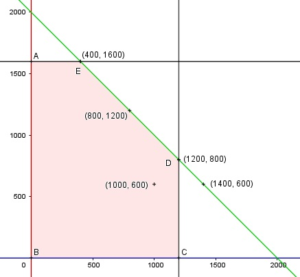

Aufgabe 70 Eine Getränkefirma kann höchstens 2 000 Flaschen pro Tag abfüllen. Vom Getränk A können 1 200 Flaschen, vom Getränk B 1 600 Flaschen abgefüllt werden. Welche Kombination (A|B) ist nicht möglich? a) (1 000|600), b) (400|1 600), c) (800| 1 200), d) (1 400|600). x = Anzahl Flaschen Getränk A y = Anzahl Flaschen Getränk B Bedingungen: x > 0 x ∈ ℕ y > 0 y ∈ ℕ x + y ≤ 2 000 x ≤ 1 200 y ≤ 1 600 Bedingungen: 1. x ≥ 0 x ∈ ℕ 2. y ≥ 0 y ∈ ℕ 3. x + y ≤ 2 000 4. x ≤ 1 200 5. y ≤ 1 600

Die Eckpunkte A, B, C, D und E bilden das Planungsgebiet, das alle Ungleichungen erfüllt. Eckpunkt A: Randgerade 1. geschnitten mit Randgerade 5. (0|1 600) Eckpunkt B: Randgerade 1. geschnitten mit Randgerade 2. B(0|0) Eckpunkt C: Randgerade 1. geschnitten mit Randgerade 4. C(1 200|0) Eckpunkt D: Randgerade 4. geschnitten mit Randgerade 3. 1 200 + y = 2 000 |-1 200 y = 800 D(1 200|800) Eckpunkt E: Randgerade 5. geschnitten mit Randgerade 3. x + 1 600 = 2 000 |-1 400 x = 400 D(400|1 600) Überprüfen von Punkt a) (1 000|600) 1. 1 000 + 600 ≤ 2 000 2. 600 ≤ 1 200 3. 600 ≤ 1 600 --> liegt im Planungsgebiet. Überprüfen von Punkt b) (400|1 600) 1. 400 + 1 600 ≤ 2 000 2. 400 ≤ 1 200 3. 1 600 ≤ 1 600 --> liegt im Planungsgebiet. Überprüfen von Punkt c) (800|1 200) 1. 800 + 1 200 ≤ 2 000 2. 800 ≤ 1 200 3. 1 200 ≤ 1 600 --> liegt im Planungsgebiet. Überprüfen von Punkt d) (1 400|600) 1. 1 400 + 600 ≤ 2 000 2. 1 400 ≤ 1 200 stimmt nicht 3. 600 ≤ 1 600 --> liegt nicht im Planungsgebiet.